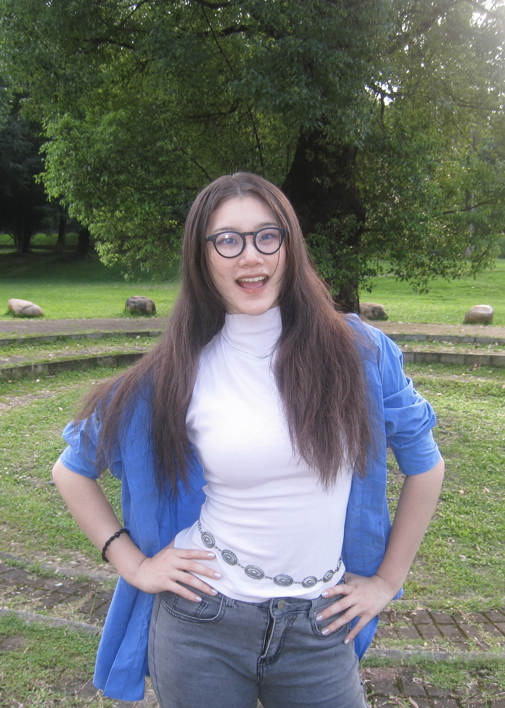

C＋工作室负责人
在工作室负责的是从灵感到落地的整个链条，确保方案在预算和时间内高质量完成，确保设计方向与目标一致
核心能力：
全流程项目管理与统筹能力、设计创新与质量把控

我关注家居与产品设计，尝试从材料的天然痕迹、日常的身体动作与生活场景中寻找设计线索。通过研究、建模与反复推敲，将观察转化为具体的形态、结构和使用体验。
DIRECTORY
Experience / Jackie
在工作室负责的是从灵感到落地的整个链条，确保方案在预算和时间内高质量完成，确保设计方向与目标一致
核心能力：
全流程项目管理与统筹能力、设计创新与质量把控
我参与项目出方案、与研究生协作研讨，学到国际思维，未来可胜任相关方案策划与跨层次协作工作
核心能力：
掌握国际思维、方案策划相关能力
具备协作策划能力、跨层次协作沟通能力
在本项目中，我主要负责用户研究与需求定义、概念设计与原型实现、跨团队沟通协调
核心能力：
掌握市场调研与分析能力
具备问题发现与定义能力、创新思维与构思能力